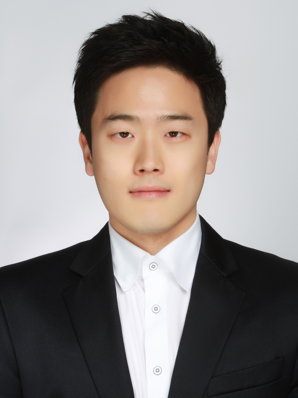

자기소개
|

|
새로운 지식을 습득하는 것과 새로운 것에 도전하는 것을 즐기는 개발자입니다. 개발자로서 제 목표는 이로운 소프트웨어를 개발하여 더 좋은 세상을 만드는 것입니다. 주로 C, C++ 언어를 사용하여 임베디드 디바이스를 조작하거나 기능을 추가하는 업무를 해왔습니다. 또한, 이러한 임베디드 디바이스를 위한 인터페이스인 웹뷰어를 수정하는 업무도 종종 해왔습니다. 웹뷰어 코드를 수정하면서 HTML5, JavaScript, CSS3에 대한 기술도 접해본 경험이 있습니다. 제가 지금까지 개발하면서 배운 것은 문제를 해결하는 능력입니다. 문제해결능력이 어느 정도 있다면, 새로운 분야에 대한 프로젝트를 수행하거나 새로운 개발언어를 배우는 것이 어렵지 않다고 생각합니다.
지금까지 경험하고 습득한 배경지식을 활용하여, 주어진 요구사항을 분석하고 고객이 원하는 프로그램을 누구보다도 잘 만들 수 있습니다.
|
교육
· <석사학위>: 성균관대학교, 소프트웨어플랫폼학과(前 임베디드소프트웨어학과), 2012.09-2014.08
- 지도교수: 엄영익
- 학위논문: Lock-free Memory Allocator for Enhancing Application Performance on Embedded Devices
· <학사학위>: 광운대학교, 컴퓨터공학과, 2005.03-2012.02
- 지도교수: 이준환
- 학위논문: 히스토그램과 방향벡터 기반 레이블링 기법에 관한 연구
경력
· SK하이닉스 근무(2017.09 ~ 현재, 선임연구원)
- 업무: Software Quality Engineering
· 한화테크윈 근무(2017.03 ~ 2017.07, 선임연구원)
· 한화테크윈 근무(2015.07 ~ 2017.02, 연구원)
· 삼성테크윈 근무(2014.07 ~ 2015.06, 연구원)
- 업무: Network CCTV Software Development
· 삼성테크윈 석사과정 산학장학생(2012.09 ~ 2014.08)
- 업무: Dynamic Memory Allocator Development and Thesis Writing
· 팬택계열 근무(2012.01 ~ 2012.04, 연구원)
- 업무: Android Map Application Development for Mobile Phone
보유기술
· 프로그래밍 언어: C, C++, Java, HTML5, JavaScript, CSS3
· Linux 및 Windows 환경에서 개발 능숙
프로젝트 경험 (SK하이닉스)
· Software Quality Engineering
프로젝트 경험 (삼성테크윈 및 한화테크윈)
· VPM(Video Privacy Management)기술이 적용된 네트워크 CCTV 개발 프로젝트
- 개발 프로젝트 리더(PL) 및 개발자로 참여
· SNMP(Simple Network Management Protocol)를 이용하여 네트워크 CCTV 이벤트 제어 프로젝트
- 개발자로 참여
· RTSP(Real Time Streaming Protocol)를 이용하여 네트워크 CCTV와 NVR(Network Video Recorder)간 인증 프로젝트
- 개발자로 참여
· RTP(Real-time Transport Protocol)를 이용하여 H.264 부분암호화 프로젝트
- 개발자로 참여
· RS485 명령어 제어 프로젝트
- 개발자로 참여
· 네트워크 CCTV Pan-Tilt-Zoom 제어하는 다수 프로젝트
- 개발자로 참여
· 네트워크 CCTV 이벤트 발생시, SMTP(Simple Mail Transfer Protocol)을 이용하여 이메일 전송하는 기능 수정 프로젝트
- 개발자로 참여
· 네트워크 CCTV 이벤트 발생시, TCP/IP 소켓을 이용하여 서버에 메시지를 전송하는 프로젝트
- 개발자로 참여
사외교육 이수사항
· Programming in HTML5 with JavaScript and CSS3
- 교육기관: 멀티캠퍼스, 교육기간: 2017.03.20~2017.03.24
· 실습으로 정복하는 임베디드 리눅스 커널
- 교육기관: 멀티캠퍼스, 교육기간: 2015.10.12~2015.10.16
· Wireshark 네트워크 패킷 분석 이해
- 교육기관: 멀티캠퍼스, 교육기간: 2014.11.10~2014.11.14
논문
국제
01. Lock-Free Memory Allocator Without Garbage Collection on Multicore Embedded Devices, Youngjoong Cho, Dongwoo Lee, Hyung Kook Jun, Young Ik Eom, ICCE 2014 (32nd IEEE Internatinal Conference on Consumer Electronics)
국내
01. DDS 미들웨어 환경을 위한 메모리 할당자, 조영중, 김인혁, 엄영익, 한국정보과학회
02. 데이터 중복제거 파일시스템 성능 비교, 이현구, 조영중, 엄영익, 한국정보과학회
03. 멀티코어 환경에서의 확장성 향상을 위한 메모리 할당자, 조영중, 김인혁, 엄영익, 한국정보처리학회
04. 가상화 I/O 성능 향상을 위한 가상화 라이브러리, 이동우, 조영중, 엄영익, 한국정보과학회
05. 가상화 환경에서 그래픽 장치 속도 개선을 위한 프레임워크, 조영중, 이동우, 엄영익, 한국정보과학회
06. 가상화 환경에서 메모리 효율성 향상을 위한 메모리 중복제거 연구, 조영중, 이세호, 엄영익, 한국정보처리학회
07. 멀티코어 환경에서 확장성과 안정성을 갖춘 메모리 할당자, 조영중, 이동우, 엄영익, 한국정보과학회
어학
· TOEIC
- 735점, 2016.02.28
· OPIc
- IM1, 2016.08.14
자격증
· 정보처리기사
- 정기기사 2회차 합격, 2015.07.31
관심분야
· 운영체제
· 임베디드시스템
· 소프트웨어 최적화
· 자료구조
· 알고리즘
좌우명
· 소년이여, 야망을 품어라.
· 크게 생각하고, 작게 시작하며, 빠르게 움직여라.
연락처
jyj8843@gmail.com